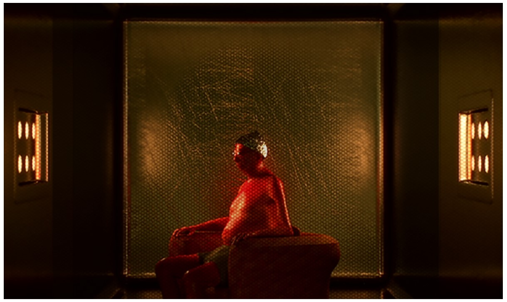

If time stopped, what action would you be stuck in? The Right To Be Forgotten is a two-part project, consisting of a 7 minute 3D animated short film and a VR experience exploring the phenomenon of being stuck.
On the production I was in charge of retopologizing 3D scans, reproject textures, clean them up, and lastly rig and skin the models. The job was done in collaboration with Federica Lazzari.
Role: Modeler, texturing artist, rigger
Director: Tue Sanggaard
Producer: Lana Tankosa Nikolic / Late Love Productions